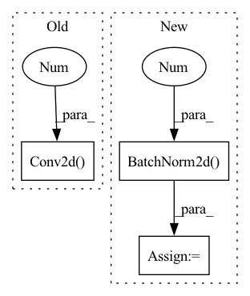

Pattern ID :15122

Before Change
out_channels //= 2
in_channels = out_channels
block += [nn.Conv2d(in_channels, out_channels, 3),
nn.LeakyReLU(0.2),
nn.Conv2d(out_channels, out_channels, 3)]
After Change
def __init__(self):
super(Discriminator, self).__init__()
self.features = nn.Sequential(
// Conv0
nn.Conv2d(3, 64, kernel_size=3, stride=1, padding=1, bias=False),
nn.LeakyReLU(negative_slope=0.2, inplace=True),
nn.Conv2d(64, 64, kernel_size=4, stride=2, padding=1, bias=False),
nn.BatchNorm2d(64),
nn.LeakyReLU(negative_slope=0.2, inplace=True),
// Conv1
nn.Conv2d(64, 128, kernel_size=3, stride=1, padding=1, bias=False),
nn.BatchNorm2d(128),
nn.LeakyReLU(negative_slope=0.2, inplace=True),
nn.Conv2d(128, 128, kernel_size=4, stride=2, padding=1, bias=False),
nn.BatchNorm2d(128),
nn.LeakyReLU(negative_slope=0.2, inplace=True),
// Conv2
nn.Conv2d(128, 256, kernel_size=3, stride=1, padding=1, bias=False),
nn.BatchNorm2d(256),
nn.LeakyReLU(negative_slope=0.2, inplace=True),
nn.Conv2d(256, 256, kernel_size=4, stride=2, padding=1, bias=False),
nn.BatchNorm2d(256),
nn.LeakyReLU(negative_slope=0.2, inplace=True),
// Conv3
nn.Conv2d(256, 512, kernel_size=3, stride=1, padding=1, bias=False),
nn.BatchNorm2d(512),
nn.LeakyReLU(negative_slope=0.2, inplace=True),
nn.Conv2d(512, 512, kernel_size=4, stride=2, padding=1, bias=False),
nn.BatchNorm2d(512),
nn.LeakyReLU(negative_slope=0.2, inplace=True),
// Conv4
In pattern: SUPERPATTERN
Frequency: 3
Non-data size: 3
Instances
Fragment ID: 51314955
Project Name: lornatang/esrgan-pytorch
Commit Name: 8ef58f0f8458d618a99fffa07433927c9b9ef70f
Time: 2020-10-12
Author: liuchangyu1111@gmail.com
File Name: esrgan_pytorch/model.py
M Class Name: Discriminator
N Class Name: Discriminator
M Method Name: __init__(1)
N Method Name: __init__(2)
M Parent Class: nn.Module
N Parent Class: nn.Module
M File Name: esrgan_pytorch/model.py
N File Name: esrgan_pytorch/model.py
M Start Line: 140
M End Line: 177
N Start Line: 26
N End Line: 74
'>
Before Change
self.conv2 = nn.Conv2d(64, 64, kernel_size=3, stride=1, padding=1, bias=False)
// Upsampling layers
self.upsampling = nn.Conv2d(64, 64, kernel_size=3, stride=1, padding=1, bias=False)
// Final output layer
self.conv3 = nn.Sequential(
nn.Conv2d(64, 64, kernel_size=3, stride=1, padding=1, bias=False),
After Change
// Upsampling layers
upsampling = []
for _ in range(upsample_block_num):
upsampling += [
nn.Conv2d(64, 256, 3, 1, 1),
nn.BatchNorm2d(256),
nn.PixelShuffle(upscale_factor=2),
nn.PReLU()
]
'>
Fragment ID: 51314910
Project Name: lornatang/esrgan-pytorch
Commit Name: 671d2c12d2cac70e3fdfeae290a11c0f6808f4f6
Time: 2020-10-14
Author: liuchangyu1111@gmail.com
File Name: esrgan_pytorch/model.py
M Class Name: Generator
N Class Name: Generator
M Method Name: __init__(2)
N Method Name: __init__(2)
M Parent Class: nn.Module
N Parent Class: nn.Module
M File Name: esrgan_pytorch/model.py
N File Name: esrgan_pytorch/model.py
M Start Line: 191
M End Line: 206
N Start Line: 190
N End Line: 213
'>
Before Change
super().__init__()
self.conv_1 = nn.Conv1d(1, 16, (3, 1))
self.conv_2 = nn.Conv2d(16, 32, (3, 1))
self.conv_3 = nn.Conv2d(32, 32, (3, 1))
self.conv_4 = nn.Conv2d(32, 64, (3, 1))
self.conv_5 = nn.Conv2d(64, 64, (3, 1))
self.max = nn.AdaptiveMaxPool2d(8)
After Change
super().__init__()
self.conv_1 = nn.Conv2d(1, 8, (3, 1))
self.bn_1 = nn.BatchNorm2d(8)
self.conv_2 = nn.Conv2d(8, 16, (3, 1))
self.bn_2 = nn.BatchNorm2d(16)
self.conv_3 = nn.Conv2d(16, 64, (3, 1))
self.bn_3 = nn.BatchNorm2d(64)
'>
Fragment ID: 51314954
Project Name: kolaszko/haptic_transformer
Commit Name: 480c8a6c89740a357ff79f97d11b8fde6f6e09be
Time: 2021-05-05
Author: mikolaj.lysakowski.bk@gmail.com
File Name: models/signal_encoder.py
M Class Name: SignalEncoderConv
N Class Name: SignalEncoderConv
M Method Name: __init__(6)
N Method Name: __init__(1)
M Parent Class: nn.Module
N Parent Class: nn.Module
M File Name: models/signal_encoder.py
N File Name: models/signal_encoder.py
M Start Line: 7
M End Line: 14
N Start Line: 10
N End Line: 31